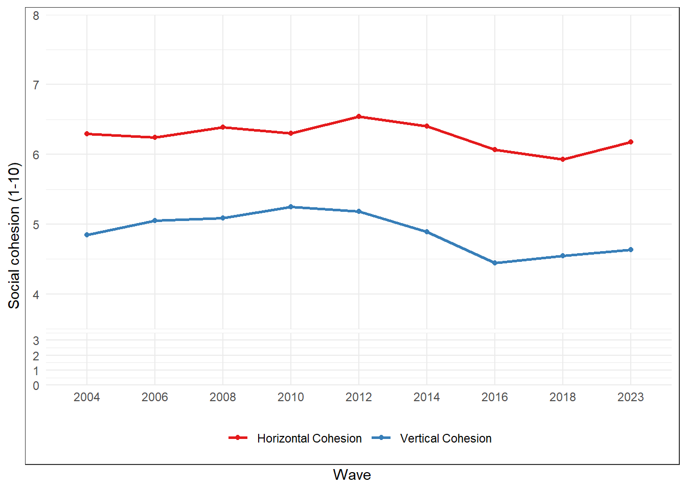

Results
Confirmatory Factor Analysis
Figure 1 reports the confirmatory factor analysis for the proposed two-factor measurement model. At first, overall fit appears strong (RMSEA = 0.03; CFI=0.0996). However, these indices should be interpreted with caution, given that including only two indicators per factor results in the model being just overidentified (df=1), which limits the diagnostic value of global fit measures.
Standardized factor loading are moderate. For Horizontal Cohesion, loadings range from 0.44 to 0.49, and for Vertical Cohesion from 0.56 to 0.58. The latent correlation between both factors is also moderate (r = 0.51), implying related but empirically distinguishable dimensions. Following Dickes and Valentova [-@dickes_construction_2013], this pattern supports interpretation of social cohesion as a multidimensional construct. However, the statement that a single composite indicator is “not possible” [-@dickes_construction_2013, p. 836] might be discussed. Empirically, the moderate latent correlation observed here suggest a shared component that could justify, on pragmatic grounds, a composite summary for descriptive purposes. Nevertheless, such composite cannot be treated as evidence of unidimensionality nor a higher-order general factor. Accordingly, subsequent analyses will primarily treat Vertical and Horizontal dimensions as separate construct, with any exceptions explicitly noted.
Descriptives

Figure 2 shows the averages for each year for the different types of cohesion. First, we observed that horizontal cohesion maintained an upward trend between until 2012, reaching 6.54 (out of 10) that year. After that, horizontal cohesion faced a sustained decline until 2018, with a regional mean of 5.93, before rebounding to somewhat similar levels as 2004 (6.17).
Meanwhile, vertical cohesion show a similar trends, with a persistente trends overt time until 2010, when it suffered a sharp decline. Between 2010 and 2016, the regional mean went from 5.24 to 4.44. After that, the index showed a slight increase, reaching 4.63 in 2023.
Across the entire period under study, horizontal cohesion remains consistently higher than vertical cohesion, with an average gap of 1.38 points. This persistent difference may reflect the structural and enduring institutional weaknesses present in many Latin American states, which might tend to reinforce the role of interpersonal relationships, family ties, and informal networks as key resources for facing social life [@araujo_institutional_2014;@brinks_political_2020].
At first glance, these trends appear closely aligned with the broader political, economic, and social context of Latin America over the period analyzed. The upward trajectories observed until 2010–2012 coincide with the commodities boom, during which rising prices of commodities such as oil, copper, and agricultural products—driven largely by demand from emerging economies—supported sustained economic growth in the region. This favorable context was leveraged by progressive and populist governments to implement redistributive policies, contributing to notable reductions in poverty and income inequality across several countries [@sanchez-ancochea_surprising_2021].
Following the slowdown of the Chinese economy around 2012 and the subsequent end of the commodities boom, many Latin American countries entered a period of economic, political and social struggles, which might be reflected in the decline of both dimensions of cohesion. Meanwhile, the slight rebound observed in 2023 may be interpreted as a process of social and political recomposition in the aftermath of the COVID-19 pandemic, during which the expansion of state support and the reinforcement of solidarity mechanisms may have partially mitigated previous erosions of social cohesion.
Relationship between and within country level factors with social cohesion
Figure 3 presents bivariate associations between both dimensions of social cohesion and macrostructural variables such as economic inequality, GDP per capita (PPP), governance, the V-Dem democracy index, and the proportion of migrant population. The panels allow us to visually distinguish variation between countries and association within countries, represented by the gray lines. The red line represents the linear fit including the United States and Canada. Since these two countries tend to appear clearly as outliers, the fit excluding them is also reported (in black). In general, the exclusion of these cases does not alter the direction of the associations, but it does reduce their strength, shifting them toward moderate or low ranges.

The correlation between economic inequality and horizontal cohesion is -0.2 (excluding Canada and the United States), with associations within countries ranging from -0.77 in Argentina to 0.64 in Brazil. The association with GDP per capita (PPP) is slightly positive (0.14), with countries such as Venezuela (r=0.88), El Salvador (r=0.67), and Brazil (r=0.42) showing correlations above the average, and countries such as Colombia (r=-0.9), Mexico (r=0.79), and Ecuador (r=-0.73) showing a negative association. The average correlation between the V-Dem Democracy Index and Horizontal Cohesion is 0.14, with Venezuela showing a strong positive association (r=0.73) and El Salvador a strong negative one (r=-0.85). The association between governance and horizontal cohesion is the most pronounced, with a coefficient of 0.43. However, it is possible to find countries that show the opposite trend, such as Colombia (r=-0.73), Paraguay (r=-0.63), and Ecuador (r=-0.62). Finally, the proportion of migrants in the country shows a positive association with horizontal cohesion (r=0.24), but with strong negative trends in countries such as Ecuador (-0.87), Colombia (-0.84), and Mexico (-0.78).
The associations between vertical cohesion and macro indicators follow the same general trends as in the horizontal dimension, although differences in magnitude are observed. Thus, the association with economic inequality is stronger in the vertical dimension (-0.36), although countries such as Chile (r=0.77), Brazil (r=0.74), and Colombia (r=0.73) show an association in the opposite direction. The average effect of GDP per capita (PPP) is practically flat (r=-0.01), but there are also countries with a strongly negative trend, such as Chile (-0.82) and Colombia (-0.81). Something similar occurs with the association between the V-Dem Index and Vertical Cohesion, where an average correlation of 0.04 does not exclude the presence of strongly positive associations in Venezuela (r=0.92) or strongly negative ones in countries such as Ecuador (-0.90). The association between governance and vertical cohesion is less pronounced than in the horizontal dimension (r=0.18), with a range from -0.87 in Colombia to 0.91 in Venezuela. Finally, the effect of the percentage of migrant population is greater in the vertical dimension than in the horizontal dimension (r=0.41), with strongly negative effects observed in countries such as Chile (-0.78) and Peru (-0.77).